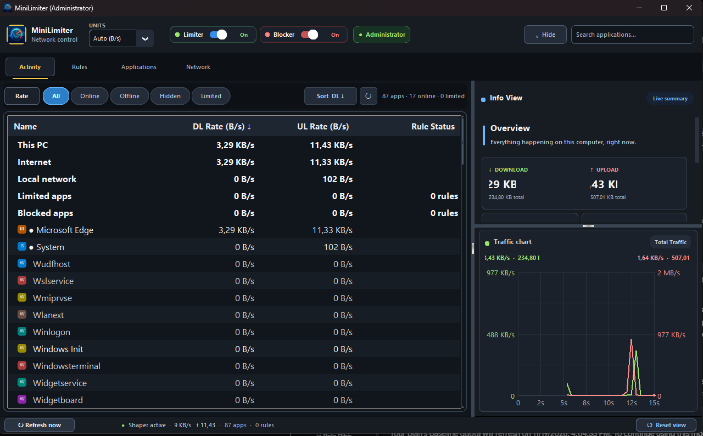
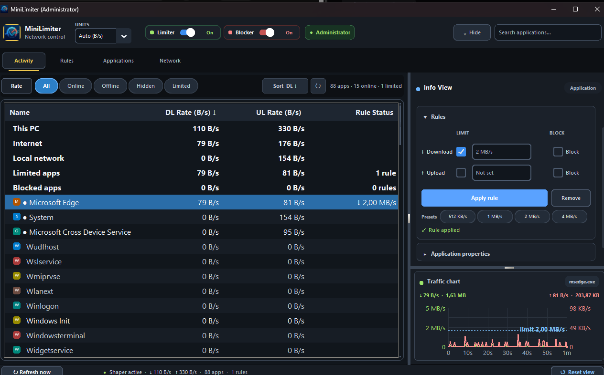
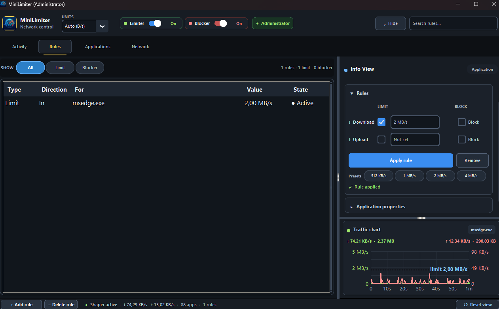
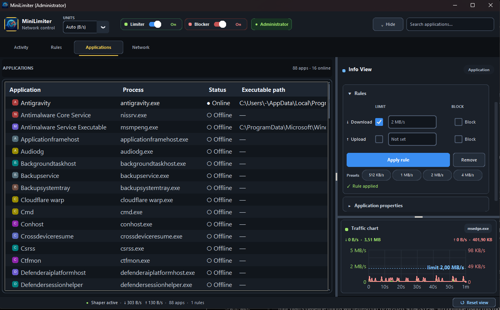
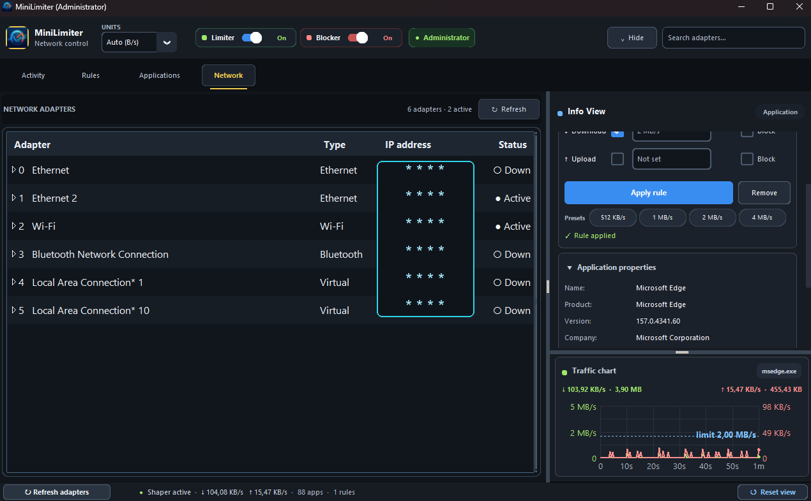
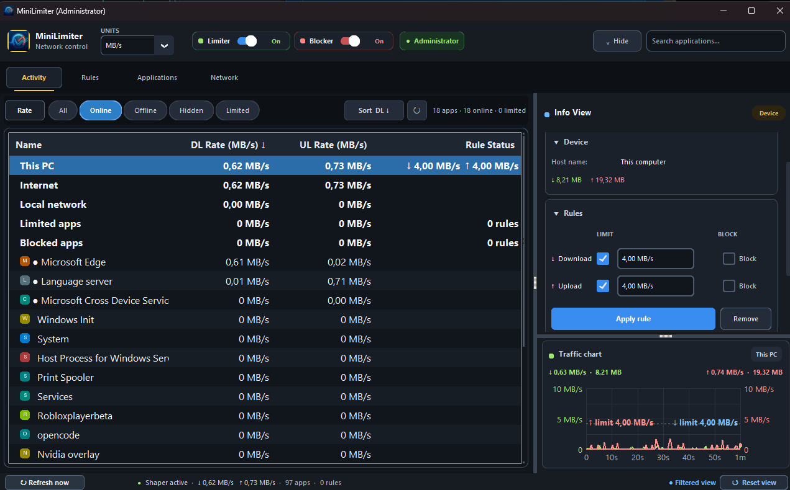
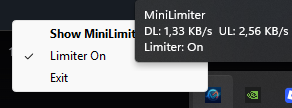
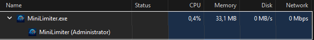

◎
Live traffic monitor
Watch every running application with real-time download and upload rates, refreshed twice per second.
ACTIVITY TABA free, lightweight, per-application internet speed limiter for Windows. Cap downloads and uploads per app, block connections instantly, and watch live traffic — all in one clean, NetLimiter-inspired window.
Real measurement and enforcement at the packet level, wrapped in an interface that stays out of your way.
Watch every running application with real-time download and upload rates, refreshed twice per second.
ACTIVITY TABCap a single app — for example, force chrome.exe to exactly 2 MB/s — without touching the rest of your network.
Select This PC to cap the entire computer in one step, including a clear ceiling line on the chart.
DEVICE LEVELClick any app to inspect it and apply a rule instantly with presets: 512 KB/s, 1 MB/s, 2 MB/s or 5 MB/s.
ONE CLICKDownload in green, upload in orange, with a flat limit ceiling so you can see the cap actually working.
60-SECOND HISTORYOne place for every active rule. Filter by All / Limit / Blocker, then enable, disable or delete with a click.
FULL CONTROLDrop an application's packets instantly. The blocker works on its own — it does not need the limiter switched on.
WINDIVERTBrowse all foreground and background processes, plus active adapters with IP, gateway, SSID and connection state.
TWO EXTRA TABSSort any column, drag splitters and column borders, then hit Reset view to restore the default layout.
YOUR LAYOUTA single folder you can copy anywhere. Double-click the EXE and Windows asks for admin rights automatically — no batch file needed.
NO INSTALLEvery major view of MiniLimiter, captured from the real portable build running as Administrator. Click any image to zoom.

assets/01-activity.pngActivity · process tree & live rates
assets/02-info-limit-chart.pngInfo View · 2 MB/s limit + chart
assets/03-rules-all.pngRules · All filter
assets/04-rules-blocker.pngRules · Blocker filter
assets/05-applications.pngApplication List tab
assets/06-network.pngNetwork List tab
assets/07-device-limit.pngThis PC · device-wide cap
assets/09-tray.pngTray icon · live DL/UL tooltipMiniLimiter uses a single WinDivert handle and a cached port-to-PID tracker, so shaping and measuring happen at the same point — once per packet, no duplicate work.
Numbers come from Windows Task Manager → Details → MiniLimiter.exe while the limiter is active.

assets/08-taskmanager.pngTask Manager · Details · CPU & MemoryGrab the portable ZIP from GitHub Releases and extract it anywhere — no installer, no dependencies.
Windows asks for Administrator rights; accept to load the WinDivert driver and enable real shaping.
Click a process in Activity, or the This PC row to limit the whole computer.
Check In (download) or Out (upload), type a speed or use a preset, then apply. Watch the chart flatten.
config/rules.json beside the EXEYes, in monitoring mode. You will see adapter totals, but per-app speeds and traffic shaping need the WinDivert driver, which requires Administrator privileges.
No. MiniLimiter uses a single-instance guard: a second launch simply focuses the window that is already open, so you never get duplicate engines or tray icons.
Packets are measured exactly where they are shaped, so a 4 MB/s cap shows about 4 MB/s in a speed test. A small 1–3% difference from NetLimiter is expected because they measure at different network layers.
Yes. The release is fully portable — rules and logs live next to the EXE, so copying the folder copies your setup.